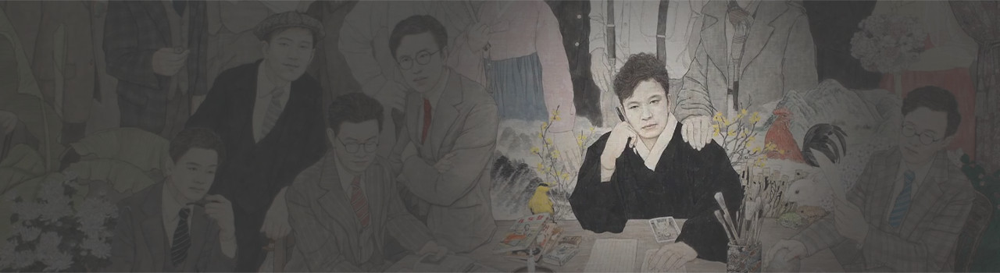
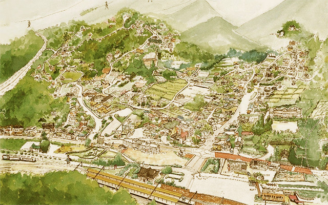
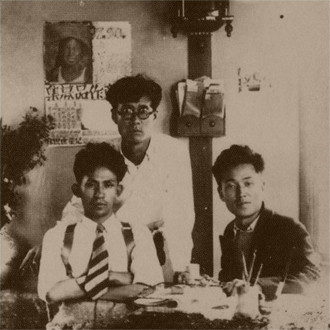
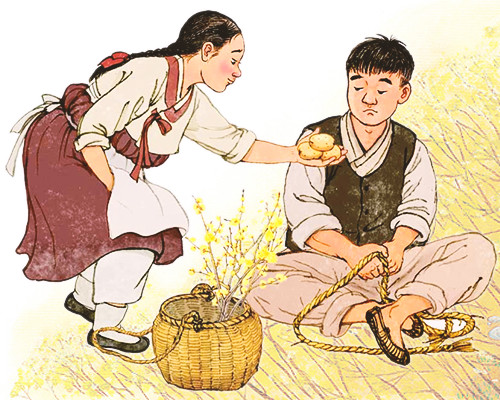

작가 김유정
KIMYOUJEONG작가의 삶
말더듬이 멱서리에서 한국문학의 대작가로
그는 팔남매 중 일곱째로 태어났으나 어려서부터 몸이 허약하고 자주 횟배를 앓았다. 또한 말더듬이어서 휘문고보 2학년 때 눌언교정소에서 고치긴 했으나 늘 그 일로 과묵했다. 휘문고보를 거쳐 연희전문학교에 입학했으나 결석 때문에 제적처분을 받았다.
그 때 김유정은 당대 명창 박녹주에게 열렬히 구애했으나 뜻을 이루지 못하고 귀향하여 야학운동을 벌인다.
금병산에 둘러싸인 모습이 마치 옴폭한 떡시루 같다 하여 이름 붙여진 실레(증리)는
작가 김유정의 고향이며 마을 전체가 작품의 무대로서 지금도
점순이 등 소설 12편에 등장하는 인물들의 실제로 있었던 이야기가 전해지고 있다.

서울로 돌아온 김유정은 고향의 이야기를 소설로 쓰기 시작한다.
1933년 처음으로 잡지 <제일선>에 ‘산골나그네’와 <신여성> 에 ‘총각과 맹꽁이’를 발표한다.
이어 1935년 소설 ‘소낙비’가 조선일보 신춘문예 현상모집에 1등 당선되고,‘노다지’가 조선중앙일보에
가작 입선함으로써 떠오르는 신예작가로 활발히 작품 발표를 하고, 구인회 후기 동인으로 가입한다.
이듬해인 1936년 폐결핵과 치질이 악화되는 등 최악의 환경 속에서 작품활동을 벌인다.
그토록 왕성한 작품 활동만큼이나 그의 병마도 끊임없이 김유정를 괴롭힌다.
생의 마지막 해인 1937년 다섯째 누이 유흥의 집으로 거처를 옮겨 죽는 날까지 펜을 놓지못한다.
오랜 벗인 안회남에게 편지 쓰기(필승前. 3.18)를 끝으로 1937년 3월 29일(양력) 그 쓸쓸하고 짧았던 삶을 마감한다.

필승아.
나는 날로 몸이 꺼진다.
이제는 자리에서 일어나기조차 자유롭지 못하다. 밤에는 불면증으로 하여 괴로운 시간을 원망하고 누워있다.
그리고 맹렬이다. 아무리 생각하여도 딱한 일이다. 이러다가는 안 되겠다. 달리 도리를 채리지 않으면 이 몸을 일으키기 어렵겠다.
필승아.
나는 지금 막다른 골목에 맞딱뜨렸다.
나로 하여금 너의 팔에 의지하여 광명을 찾게 하여다우.
나는 요즘 가끔 울고 누워있다. 모두가 답답한 사정이다. 반가운 소식 전해다우.
우직하고 순박한 주인공들 그리고 사건의 의외적인 전개와 엉뚱한 반전,
매우 육담적(肉談的)인 속어, 비어의 구사 등 탁월한 언어감각으로 1930년대 한국소설의 독특한 영역을 개척했다.
그의 작품은 우리 가슴 속에 깊은 감동으로 살아있다. 그의 모습 또한 깊이 각인되어 앞으로도 인간의 삶의 형태가 있는 한 잊히지 않을 것이다.
1936년 잡지 <조광> 5월호에 처음 발표되어 현재까지 사랑받고 있는 대문호 김유정 집필의 단편소설.
사춘기 시골 소년과 소녀의 풋풋한 사랑을 그려낸 작품으로, 현대적 관점에서도 해학적 요소가 많고,
구수한 강원도 사투리와 아름다운 순 한국어 단어를 사용한 김유정식의 작품이다.

작가연보
- 1900~1919
- 1908
-
1908년 2월 12일(음력 1월 11일) 강원도 춘천부(春川府) 남내이작면(南內二作面) 증리(甑里-실레) 427번지, 지금의 강원도 춘천시 신동면 증리에서 부친 김춘식(金春植) 모친 청송(靑松) 심씨의 2남 6녀 중 일곱째이자 차남으로 출생, 10대조 김육(金堉)은 대동법(大同法)을 실시한 실학(實學)의 선구자였으며, 9대조 김우명(金佑明)은 현종(顯宗)의 국구(國舅-임금의 장인)였고 숙종(肅宗)의 외할아버지였다.
고조부 김기순(金基恂) 때 춘천 실레마을로 이주했다. 증조부 김병선(金秉善)은 실레마을에 화서학파(華西學派)의 거유(巨儒)인 김평묵(金平默)을 초빙, 학당(學堂)을 열고 자제들을 교육케 했다. 화서학파의 위정척사(衛正斥邪) 학풍(學風)을 이어받은 조부 김익찬(金益贊) 은 춘천 의병(義兵) 봉기의 배후 인물로 재정 지원을 했다.
조부때 6천석 추수를 하는 춘천의 명가(名家)가 되었다. 음직(蔭職)으로 도사(都事)벼슬. 김유정이 탄생하는 그해에 춘천의 2차 의병봉기로 정미의병(丁未義兵)의 기세가 드높았다.
- 1914
-
1914년 11월 26일 유정의 조부 도사(都事)벼슬을 했던 김익찬(金益贊)사망.
이때부터 부친 김춘식(金春植)을 참봉으로 호칭. 이해 겨울에 한양(漢陽-지금 서울)의 종로구 운니동(당시 진골)에 대저택을 마련, 가족이사.
춘천에 집을 그냥두고 소작농으로 하여금 농사를 짓게 함. - 1915
-
1915년 7세. 3월 18일 어머니 청송 심씨 사망.
춘천에 내려갔던 형 유근(裕近)이 미처 오지 못하자 홀로 상주가 됨. - 1917
-
1917년 9세. 5월 23일 아버지 김춘식 사망. 고아가 됨.
형님과 형수 누님의 사랑을 받음. 운니동(雲泥洞)에서 관철동(貫鐵洞)으로 이사.
1919년 봄까지 3년 동안 한문 공부와 붓글씨를 익힘. 김유정 작품에 나타나는 동양 고전지식은 이때 익힘.
- 1920~1929
- 1920
- 1920년 12세. 재동공립보통학교(齋洞公立普通學校)에 입학. 재동공립보통학교가 있던 지역은 당시 우리나라 정치, 경제, 문화, 사회의 중심지 1921년 13세. 3학년으로 월반
- 1923
- 1923년 15세. 재동공립보통학교 4년 (제16회)졸업. 4월 9일 휘문고등보통학교(徽文高等普通學校)를 검정(檢定)으로 입학. 숭인동(崇仁洞) 80번지로 이사. 학적부에는 가족 11명,형제 2명, 재산 5만원 성질을 질박, 키는 5척. 이름을 김나이(金羅伊)로 고쳐 집에서 부름. 소설가가 된 안회남(安懷南)과 같은 반으로 각별히 친하게 지냄.
- 1926
-
1926년 18세. 휘문고보 3학년을 마치고 휴학
1927년 19세. 휘문고보 4학년에 복학
1928년 20세. 형 유근가족 춘천 실레로 이사. 유정은 봉익동 삼촌집에 얹혀 지냄. 인간문화재 박녹주(朴綠珠) 공연을 처음 관람 - 1929
-
1929년 21세. 휘문고보 5년 졸업(제 21회).
삼촌댁에서 사직동 둘째 누님 유형(裕瀅)집으로 거처를 옮김(누님은 이혼 후 양복공장 근무)
- 1930~1934
- 1930
-
1930년 22세. 연희전문학교(延禧專門學交) 문과에 입학하였으나 6월 24일 학칙 제 26조에 의거, 제명처분 당함.
박녹주를 짝사랑했으나 끝내 거절당함. 춘천 실레에 내려와 방랑생활. 들병이와 친해짐.
늑막염 재발. 안회남의 권고로 소설을 씀 - 1931
-
1931년 23세. 4월 20일 보성전문학교(普成專門學校) 법과에 다시 입학. 그 후 자퇴함(퇴학자 명단에만 있을 뿐 상세한 기록은 없음). 실레마을에 야학당(夜學堂)을 열다.
농우회, 노인회, 부인회 조직. 농우가(農友歌) 지어 부름. - 1932
- 1932년 24세. 야학당을 금병의숙(錦屛義塾)으로 넓히고 간이학교로 인가받음. 느티나무를 식목함. 6월 15일 처녀작 단편 <심청>을 탈고(4년 뒤인 1936년 중앙지에 발표).
- 1933
- 1933년 25세. 서울에 올라와 사직동에서 누님과 함께 기거. 폐결핵 발병진단. 1월 13일 <산골 나그네> 탈고, 안회남의 주선으로 제1선지 3월호에 발표. 8월 6일 <총각과 맹꽁이>를 탈고, 신여성 9월호에 발표. 공식적으로 발표된 작품으로 쳐서 처녀작은 <산골 나그네>가 됨. 사직동 시대 유정은 톨스토이가 되고자 함. 이석훈(李石薰), 채만식(蔡萬植), 박태원(朴泰遠), 이상(李箱) 등을 만남.
- 1934
-
1934년 26세. 누님이 사직동 집을 처분. 혜화동 개천가에 셋방을 얻어 밥장사.
충남 예산 등지의 금광을 전전함.
8월 16일 <정분> 탈고. 9월 10일 <만무방> 탈고. 12월 10일<애기> 탈고. <노다지><소낙비>를 12월에 탈고. (1933년의 <흙을 등지고>를 1934년 <따라지 목숨>으로 개작, 신문사와 협의 <소낙비>가 됨) 안회남이 대신 신춘문예 응모작으로 부침.
- 1935~1939
- 1935
-
1935년 27세. 조선일보 신춘문예 현상모집에 <소낙비>1등 당선. 조선중앙일보 신춘문예 현상모집에 <노다지>가작 입선. 1월 20일 아서원서 신춘문예현상 1등 당선 축하회.
6월 3일 백합원서 조선문단사가 주최한 문예좌담회에 참석. 김유정은 안회남(安懷南), 김남천(金南天), 이학인(李學仁), 박영호(朴英鎬), 이선희(李善熙), 함대훈(咸大勳), 이헌구(李軒求), 이석훈(李石熏), 김환태(金煥泰), 이무영(李無影), 한인택(韓仁澤), 서항석(徐恒錫), 정지용(鄭芝溶), 김희규(金憘奎), 이하윤(異河潤), 김광섭(金珖燮), 방인근(方仁根), 최정오(崔定吾)와 함께 연회에도 참석했다.
단편 <금따는 콩밭>, <개벽> 3월호, <금> 영화시대, <떡> 중앙 6월호, <만무방> 조선일보 7월, <산골>조선문단 7월호, <솟>매일신보 9월, <홍길동전> 신아동 10월, <봄·봄>조광 12월호 등을 발표한다. 이 한해에 소설 11편과 수필 <잎이 푸르러 가시든 님이>조선 중앙일보 3월 6일,<조선의 집시-들병이 철학>매신일보 10월, <나와 귀뚜라미>조광 11월호 등, 3편을 발표한다.
6월 3일 <조선문단>이 주최한 문예좌담회에서 이태준(李泰俊)에 대해 깊은 관심을 보임. 구인회(九人會) 후기 동인으로 참여하여 이상과 깊은 친분을 가짐. <안해>를 사해공론(四海公論) 12월호에 발표하여 문단의 찬사를 받는다.
- 1936
-
1936년 1월부터 8월까지 9편의 소설과 4편의 수필을 발표. 단편 <심청>중앙1월호, <봄과 따라지>신인문학 1월호, <가을>사해공론1월호,<두꺼비>시와소설, <봄밤>여성 4월호, <이런 음악회>중앙 4월호, <동백꽃>조광5월호, <야앵>조광7월호, <옥토끼>여성7월호가 각각 발표됨. 미완의 장편소설 <생의 반려>는 중앙 8,9월호에 연재됨.
수필<오월의 산골짜기>, <어떠한 부인을 마지할까>, <전차가 희극을 낳아>, <길>등을 5월에서 8월 사이에 발표하고 <행복을 등진 정열>은 여성지 10월호에, <밤이 조금만 짤렀드면>은 조광지 11월호에 발표. 단편소설 <정조>는 조광지 10월호에, <슬픈이야기>는 여성지 12월호에 발표, 마지막 여인 박봉자를 짝사랑 하였다. 병이 깊어져 김문집이 병고작가 구조운동을 벌임.
- 1937
-
서간문 <문단에 올리는 말씀>을 조선문학 1월호에 게재. 수필 <강원도 여성편>여성 1월호, <병상 영춘기>조선일보 1월 29일~2월 2일 발표. 2월 조카 진수에 의지하여 경기도 광주군 중부면 상산곡리 100번지의 매형 유세준의 집에 옮겨와 요양 치료함.
소설 <따라지>조광 2월호, <땡볕>여성 2월호, <연기>창공 3월호 발표. 서간문<병상의 생각>을 조광지 3월호에 발표하고, 세상뜨기 11일 전인 3월 18일 <필승전>으로 되어 있는 마지막 편지를 안회남에게 보냄. 3월 29일 오전 6시 30분에 30세의 나이를 다 채우지 못하고 경기도 광주군 중부면 상산곡리 100번지 매형 유세준의 집에서 사망함. 서대문 밖(홍제동 화장터)에서 화장되어 유해는 한강에 뿌려짐.
이 해의 사후 발표작으로 수필 <네가 봄이런가>여성 4월호, 단편소설 <정분>조광5월호, 번역동화 <귀여운 소녀>매일신보 4월 16일~21일, 번역 탐정소설 <잃어진 보석>조광 6월~11월호 발표됨.
- 1938
- 1938년 단편집 <동백꽃>(三文社) 발간됨.
- 1939
- 1939년 사후 발표된 소설로 <두포전> 소년1~5월호, <형>광업조선 11월호, <애기>문장12월호가 있다.